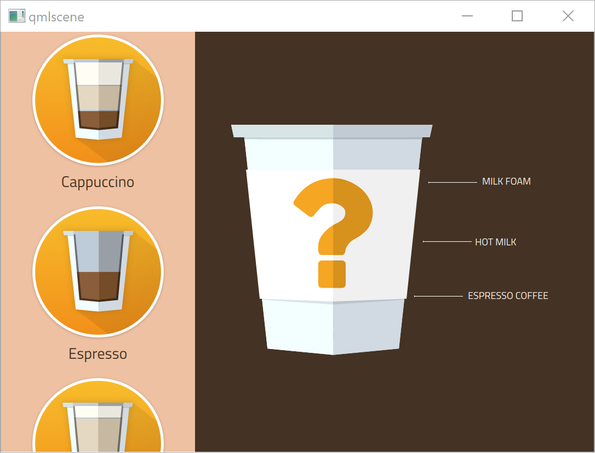
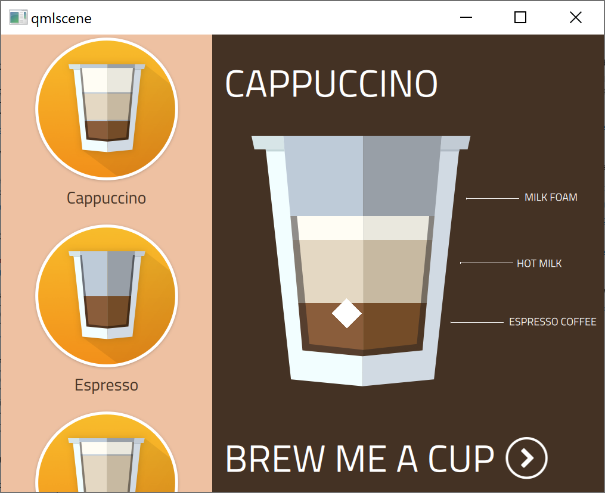
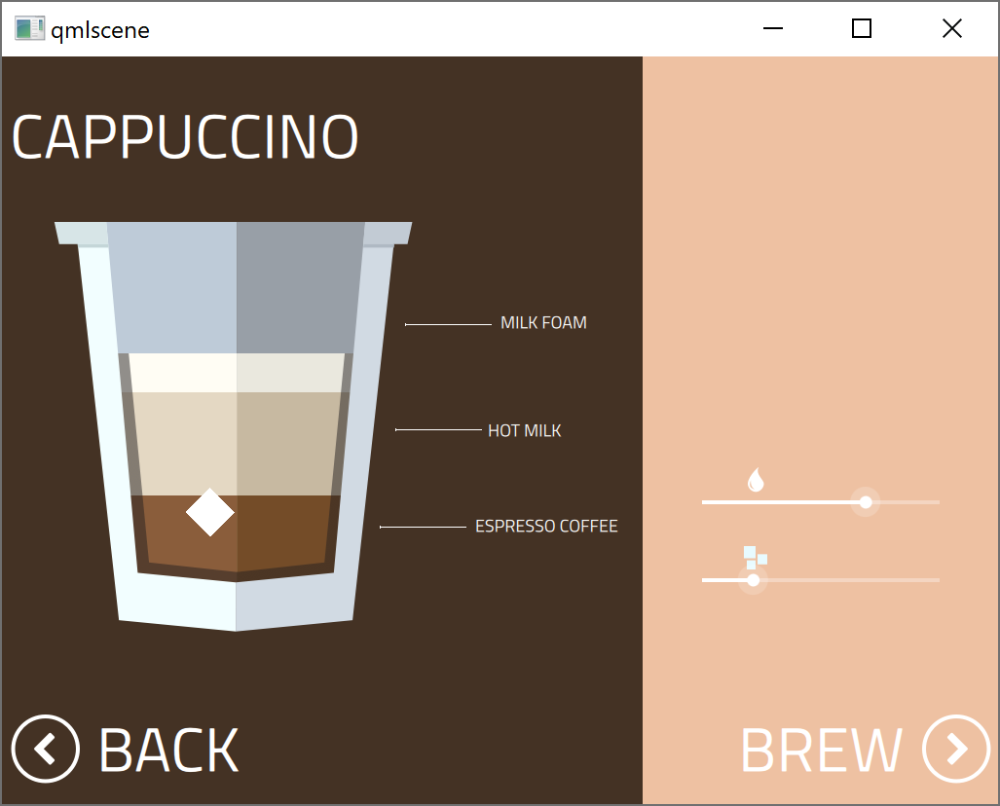
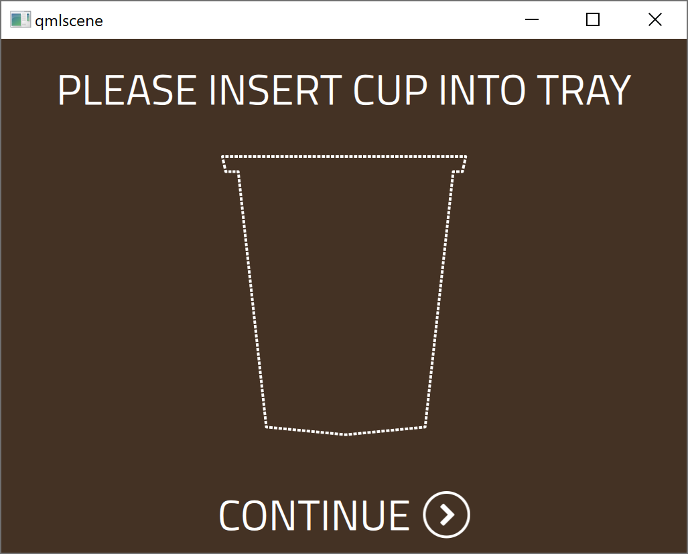
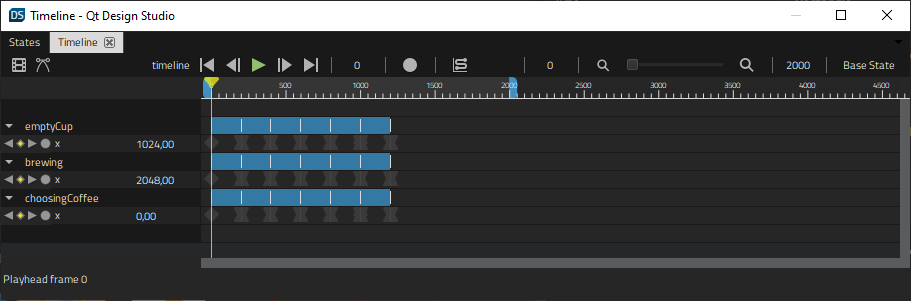
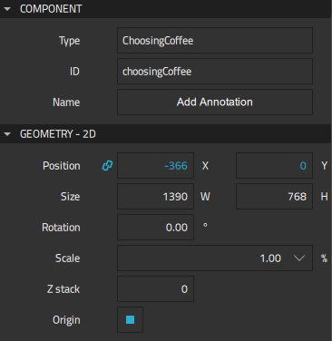
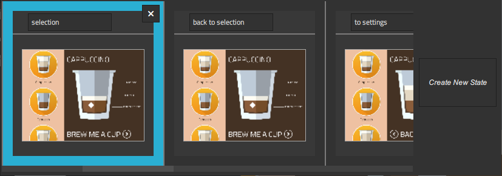
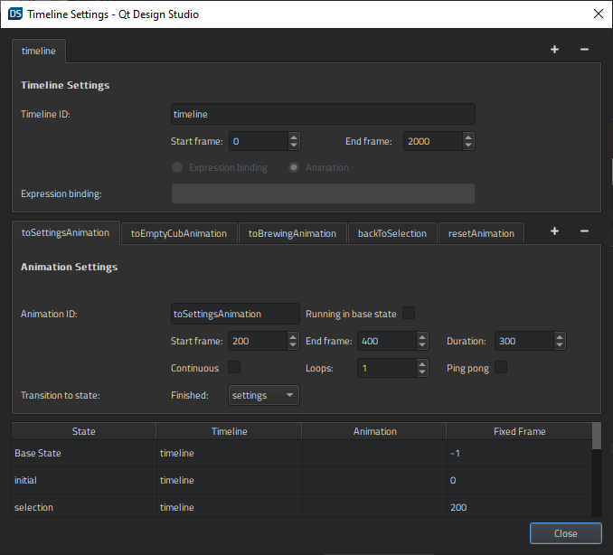

Coffee Machine
Illustrates how to use the timeline and states to animate transitions in a UI.

Coffee Machine lets users choose the type of coffee to brew. They can determine the ratio of coffee, hot milk, and milk foam by using sliders. The progress of the brewing process is displayed as an animation. When the coffee is ready, the startup screen appears again.
The ApplicationFlowForm.ui.qml file contains all the screens in the UI. We use states to display the appropriate screen in the viewport and the timeline to animate the transitions between and on the screens.
Application Flow
On the startup screen, AnimationFlowForm.ui.qml, users can select from several types of coffee to fill the empty cup. The selection triggers animation1 and animation2 in CoffeeButton.qml.
PropertyAnimation {
target: glow
id: animation1
duration: root.duration
loops: 1
from: 1.05
to: 1.2
property: "scale"
}
ParallelAnimation {
id: animation2
SequentialAnimation {
PropertyAnimation {
target: glow
duration: root.duration
loops: 1
from: 0.2
to: 1.0
property: "opacity"
}
...
Selecting the coffee type triggers the respective signal handler in SideBar.qml, which sets the default mix for the selected coffee type. The following code snippet displays the cappuccinoButton.onClicked() signal handler:
cappuccinoButton.onClicked: {
sideBar.currentCoffee = qsTr("Cappuccino")
sideBar.currentFoam = 1
sideBar.currentMilk = 7
sideBar.currentCoffeeAmount = 3.5
sideBar.coffeeSelected()
}
The sideBar.coffeeSelected() signal sets applicationFlow.state in ApplicationFlow.qml to "selection". We will specify the states later.
choosingCoffee.sideBar.onCoffeeSelected: {
applicationFlow.state = "selection"
}

Clicking Brew me a cup triggers the choosingCoffee.brewButtonSelection.onClicked signal handler, which changes the application flow state to "to settings":
choosingCoffee.brewButtonSelection.onClicked: {
applicationFlow.state = "to settings"
applicationFlow.choosingCoffee.milkSlider.value = applicationFlow.choosingCoffee.sideBar.currentMilk
applicationFlow.choosingCoffee.sugarSlider.value = 2
}
Users can use the sliders for the amount of milk and sugar to change the default values.

Clicking Brew triggers the choosingCoffee.brewButton.onClicked() signal handler, which sets the application flow state to "to empty cup".
choosingCoffee.brewButton.onClicked: {
applicationFlow.state = "to empty cup"
}

Clicking on Continue triggers the emptyCup.continueButton.onClicked signal handler, which sets the application flow status to "to brewing".
emptyCup.continueButton.onClicked: {
applicationFlow.state = "to brewing"
brewing.coffeeName = choosingCoffee.sideBar.currentCoffee
brewing.foamAmount = choosingCoffee.sideBar.currentFoam
brewing.milkAmount = applicationFlow.choosingCoffee.milkSlider.value
brewing.coffeeAmount = choosingCoffee.sideBar.currentCoffeeAmount
brewing.start()
}
When the coffee is ready, the brewing.onFinished signal handler is triggered. It sets the application flow status to "reset", so that the application returns to the startup screen.
Using Timelines to Animate Transitions
The Coffee Machine application screens for choosing coffee, empty cup, and brewing each use custom components specified in separate UI files (ui.qml).
We use the Timeline view to animate the transitions between the screens during the application flow in ApplicationFlowForm.ui.qml.

Our viewport contains 200 frames, so we select the  "Plus button" button to add a 1200-frame timeline to the root component. We use the default values for all other fields.
"Plus button" button to add a 1200-frame timeline to the root component. We use the default values for all other fields.
To start recording the transition from the startup screen to the coffee selection screen on the timeline, we select choosingCoffee in Navigator. We check that the playhead is at frame 0, and then select the  (Auto Key (K)) button (or press k).
(Auto Key (K)) button (or press k).
At frame 0, we set the X coordinate to 0 in Properties > Geometry - 2D > Position. We then move the playhead to 400 frames and set the X coordinate to a negative value.

When we deselect the record button to stop recording the timeline, the new timeline appears in the view.
For more information about using the timeline, see Creating Timeline Animations.
Using States to Move Between Screens
We use the States view to determine the contents of the viewport. The animations are run when moving from one state to another.

We create the states by moving from viewport to viewport in ApplicationFlowForm.ui.qml and selecting Create New State in the States view.
We also create states for animations that are run when moving to the "settings" and "selection" states.
We then return to the Timeline view and select  "Timeline Settings button" to open the Timeline Settings dialog. We select the Add button to create animations for each part of the timeline. Therefore, the start and end frame of each animation are important, whereas their duration is not.
"Timeline Settings button" to open the Timeline Settings dialog. We select the Add button to create animations for each part of the timeline. Therefore, the start and end frame of each animation are important, whereas their duration is not.

We set the start frame for the "selection" state to 400 and the end frame to 200 because we are moving back on the timeline to display the selection sidebar.
In the Transition to state field, we select the state to switch to when the animation ends. In the lower part of the dialog, we bind the states that don't have animations to fixed frames.
Files: